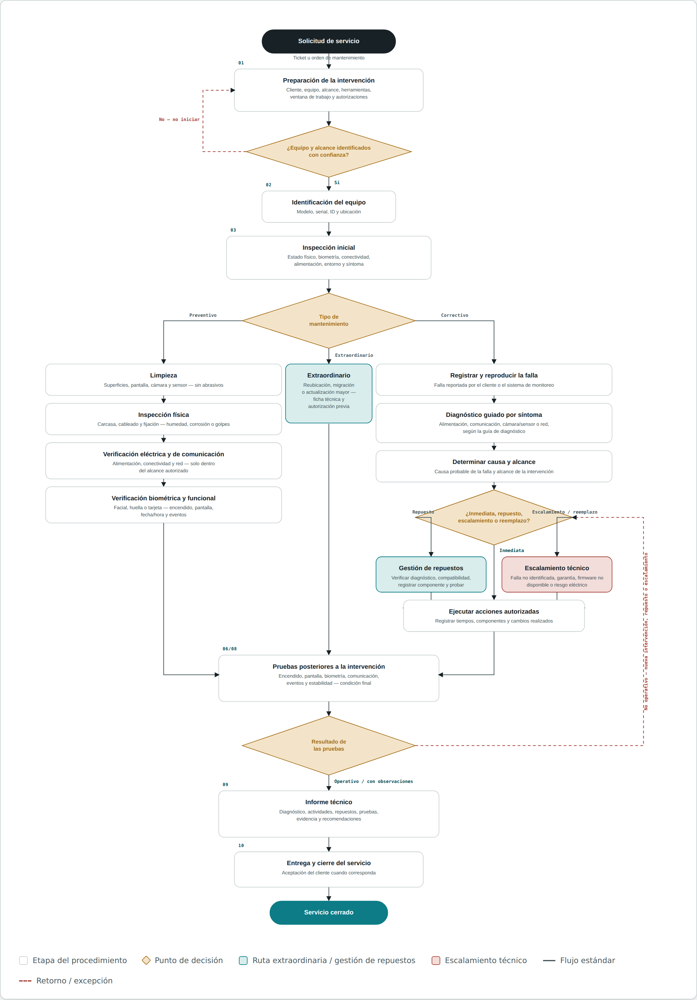

Contenido del documento
- Área responsable
- Operaciones Técnicas (Soporte y Mantenimiento)
- Modelos cubiertos
- ZKTeco SpeedFace-V5L / V3L · VIRDI UBio-X Face · VIRDI AC-2100 Plus
- Documento fuente
- 2400-MAN-OPE, versión 2.0
01Resultado de la prueba final
Criterio de aceptación aplicado tras las pruebas posteriores a cualquier intervención.
| Resultado | Criterio |
|---|---|
| Operativo | Cumple las pruebas requeridas y no presenta la condición reportada. |
| Operativo con observaciones | Funciona, pero existe una condición que debe quedar documentada y gestionada. |
| No operativo | No es posible garantizar funcionamiento; requiere nueva intervención, repuesto, escalamiento o reemplazo. |
02Motivos de escalamiento técnico
El caso debe escalarse cuando el técnico no pueda resolverlo dentro de su nivel de competencia o autorización, o cuando exista riesgo para el equipo, la información o la operación.
- Falla no identificada después del diagnóstico estándar.
- Necesidad de reparación de placa o intervención especializada.
- Firmware no disponible o no validado.
- Pérdida potencial de configuración o datos.
- Equipo bajo garantía y la intervención puede afectarla.
- Necesidad de intervención del fabricante.
- Falta de repuesto compatible.
- Falla recurrente sin causa aparente.
- Riesgo eléctrico o de seguridad.
- Necesidad de cambio de infraestructura fuera del alcance.
03Diagrama de flujo

Figura 1. Flujo del procedimiento de mantenimiento preventivo, correctivo y extraordinario de equipos biométricos.
04Registros y evidencia del servicio
Documentación mínima que respalda la trazabilidad de cada intervención.
| Registro | Uso |
|---|---|
| Orden de servicio — 2401-FOR-OPE | Apertura y trazabilidad de la visita (una por visita). |
| Checklist — 2402-FOR-OPE | Ejecución de rutina y pruebas finales (uno por equipo). |
| Informe técnico — 2403-FOR-OPE | Diagnóstico, actividades, repuestos y solución (por equipo, cuando aplica). |
| Registro fotográfico — carpeta EVIDENCIAS | Evidenciar condición / intervención cuando corresponda. |
| Repuestos — sección 5 del 2403-FOR-OPE | Control de componentes retirados e instalados. |
| Pruebas finales — sección 5 del 2402-FOR-OPE | Demostrar recuperación funcional. |
| Acta de entrega — 2408-FOR-OPE | Formalizar la entrega de la visita cuando aplique. |
Elaborado a partir de 2400-MAN-OPE — Manual de Gestión de Mantenimiento de Equipos Biométricos (Ideas Control Equipos y Soluciones S.A.S., versión 2.0). Las particularidades técnicas de cada modelo deben validarse contra la ficha técnica y la documentación vigente del fabricante.